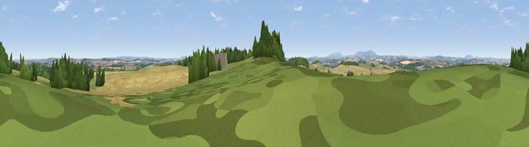

Viewpoint near Claverley
#16567 in England · top 34% of its area beats it · near Claverley · access?Where it is
The exact computed spot (SO 76825 92225). Click the marker for map links.
Public access: no public right of way or access land is recorded at this exact spot — it may be on private land. Computed from Natural England's CRoW access layer and OpenStreetMap rights of way — not the legal definitive map. Always verify locally.
The view, rendered

A 360° render of this exact spot computed from the terrain model, tree cover and land cover — summer colours, afternoon light, calibrated against photographs of famous viewpoints. Real trees, hedges and buildings will differ in detail.
The panorama
Grey silhouette: terrain skyline in each direction (720 bearings, Earth curvature and refraction included). Dashed green: skyline with trees (+15 m) and buildings (+8 m) as obstacles. Blue strip: how far the ground is visible on each bearing.
Where the view opens
Wedge length = distance to the farthest visible ground on that bearing (vegetation-aware). Rings at 10, 25 and 50 km.
What fills the view
35% grassland · 33% cropland · 31% woodland · 1% built-up
Angular shares of the visible panorama (visual magnitude), not map area. Landscape diversity 0.50 (0–1 Shannon).
Key numbers
More beautiful places nearby
The staircase of upgrades: each row has a higher view potential than everything closer. Driving times are estimates from straight-line distance, calibrated against real road routing — check an actual route before setting out.
| Place | Direction | Drive | Score |
|---|---|---|---|
| Viewpoint near Claverley | N · 0 km | ~2 min | 60.0 |
| Viewpoint near Quatt | SSE · 5 km | ~11 min | 60.7 |
| Apley Terrace | NW · 7 km | ~15 min | 65.1 |
| Viewpoint near Enville | SSE · 8 km | ~16 min | 73.1 |
| Knowle Hill | SW · 13 km | ~24 min | 75.5 |
| Viewpoint near Harley | WNW · 18 km | ~31 min | 79.9 |
| Viewpoint near Abdon | WSW · 18 km | ~31 min | 82.6 |
| Viewpoint near Burwarton | WSW · 19 km | ~32 min | 83.4 |
52.52740, -2.34303 · source: screening · position refined by local search. Computed location — check access rights before visiting.